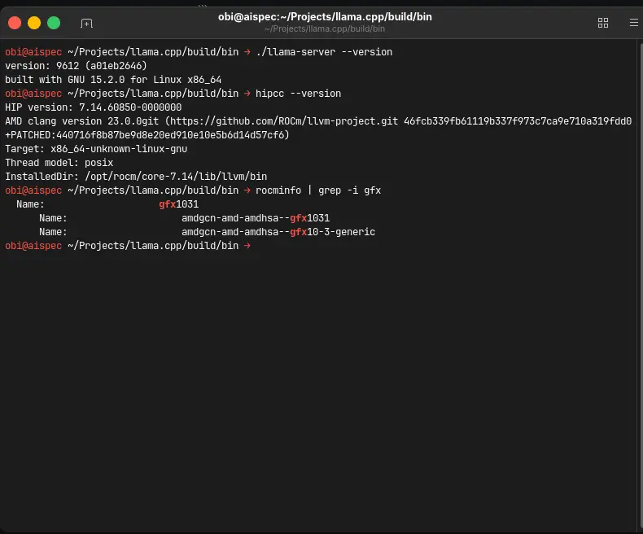
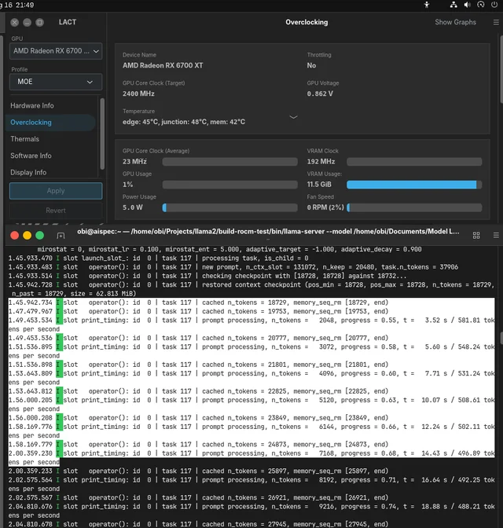
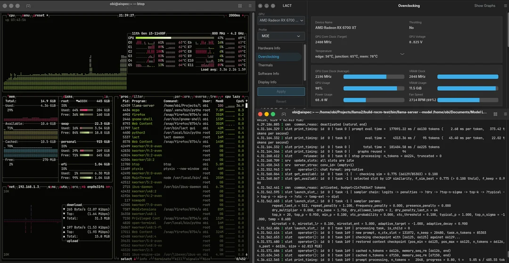
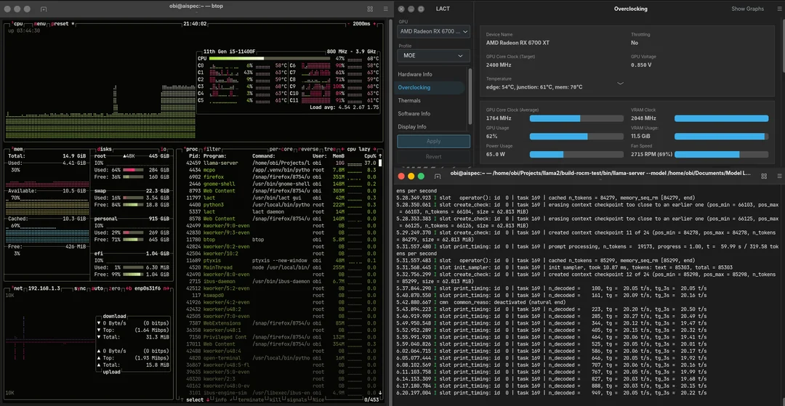
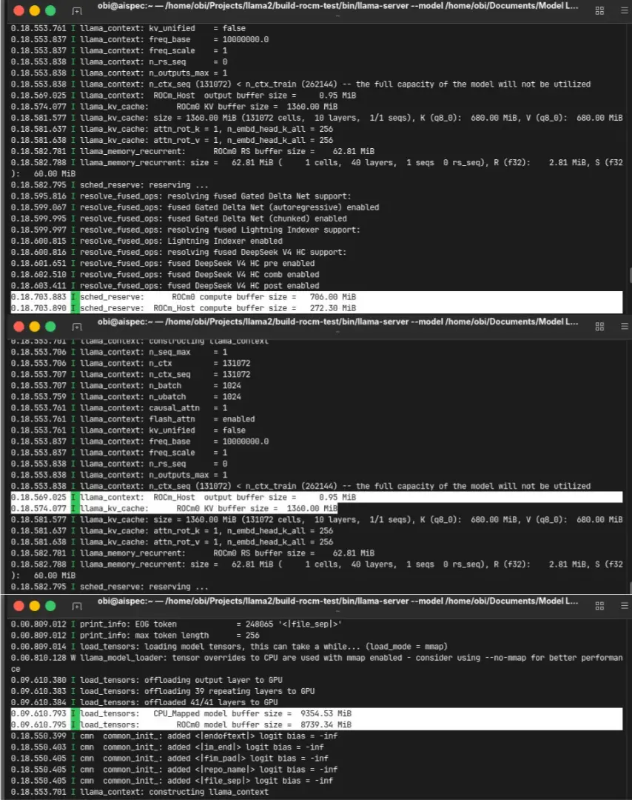

From Override to Native: Robust ROCm gfx1031 Without HSA_OVERRIDE.
Can RX 6700 XT (gfx1031) run ROCm natively — no HSA_OVERRIDE, no spoofing — with flash-attention stable and prefill sustained above 500 tok/s at 20K+ cached context on a 35B A3B CPU/GPU split?
Phase 1 (EXP 008): override workaround · Phase 2 (this page): native robust fix · 581 → 502 tok/s sustained
System Requirements
CPU
Intel Core i5-11400F
RAM
16GB DDR4 3200MT/s
GPU
RX 6700 XT 12GB gfx1031 Sapphire PULSE
OS
Ubuntu Desktop 26.04 LTS
ROCm
TheRock HIP 7.14.60850 clang 23.0.0git
llama.cpp
10307 fc3f10b38 GNU 15.2.0
Model
Ornith-1.0-35B-UD-IQ4_NL n-cpu-moe 22
Engines
llama.cpp Ollama Unsloth LM Studio SGLang vLLM
Status
STABLE native, no override
rocminfo | grep gfx → gfx1031 (not spoofed). lspci Navi 22 rev c1 Sapphire PULSE. Exact HIP + commit matter — see Caveats. Previous phase: EXP 008 + #26702.
Screenshots
Native evidence — versions, sustained prefill, btop + lact + logs in one frame. Full write-up in Reddit post.





Visualization
580 to 502 tok/s sustained — not a cold-start number.
Real session on Ornith-1.0-35B split CPU/GPU, 18–23K already cached, prompt chunks 2048→6144. This is TTFT that matters for 70K+.
Note: different model than EXP 008 (gemma4 12B fully on GPU) — same goal, different experiment, do not compare 581 vs 653 directly.
Prefill sustained 500+ floor
3.52s/581.81 → 5.60s/548.24 → 7.71s/531.24 → 10.07s/508.61 → 12.24s/502.11 · Vulkan same regime 70–100
Clock +45% vs bandwidth +7% — prefill is compute, decode is bandwidth.
3060 split peaks ~300 tok/s prefill. 6700XT should clear it widely — Vulkan didn’t. That gap signaled software bottleneck, not hardware ceiling. Decode 22–23 tok/s flat past 40K — consistent, not the bottleneck chased.
For those of you unable to read this data from technical standpoint, here is the conclusion:
Running a big 35B model split across 12GB GPU + CPU means waiting for the prompt to process at 70K+ context is what hurts — not writing answers.
Easy mode was okay at 16–32K but painful beyond. Pretending my card is a different model caused crashes and silent slowdowns.
I insisted on native recognition, watched a stable mode to find the real kernel, and forced the matrix-core path for one specific size — one line of code.
Result: ~580 pages/sec peak staying above 500 with 20K already loaded, 131K context stable, working across 6 apps — not just one.
I’m self-taught and found this by observation — if you know why it works deeper, I’d love to learn. Full repro versions and flags are inside; don’t copy the number blindly.
Experiment Details
gfx1031 sits awkwardly: RDNA2 but not gfx1030 (RX 6800/6900) where official ROCm support and community docs concentrate. Applying gfx1030 guides as-is to a 6700XT either silently falls back or crashes outright.
I tried HSA_OVERRIDE_GFX_VERSION=10.3.0: flash-attention wouldn’t enable, top_k silently fell back to CPU tanking decode, and random mid-inference core dumps appeared. I required native gfx1031, no override — costly trial and error, but necessary. This backend optimization is why EXP 001 exists at all: EXP 008 was the first unlock via override, this page (EXP 009) is the refinement to native.
- 1.
TheRock HIP
7.14.60850clang23.0.0git— don’t substitute arbitrary TheRock builds, variance is large. - 2.
llama.cpp
10307 fc3f10b38 GNU 15.2.0— commit drift is real,fattn.culogic shifts per commit. - 3.
Native proof:
rocminfo → gfx1031+lspci Navi 22 rev c1 Sapphire PULSE RX 6700 XT GAMING OC. - 4.
Model split:
Ornith-1.0-35B-UD-IQ4_NL --n-cpu-moe 22 --n-gpu-layers 99 --ctx-size 131072 --cache-type-k q8_0 --cache-type-v q8_0— 22 from VRAM headroom, not arbitrary. - 5.
Threads:
--threads 4bandwidth-bound on DDR4-3200; 3 slightly faster on paper but 95C spikes vs 83C controlled at 4. - 6.
Batch
1024: 1536/2048 gave no meaningful prefill gain, added ~10C — not worth it. - 7.
Multi-engine: llama.cpp (build-rocm-test) + Ollama (moved from Vulkan) + Unsloth + LM Studio + SGLang + vLLM — all native after fix.
6700XT boost +45% over 3060 12GB should dominate prefill (compute-bound) while barely moving decode (bandwidth-bound, only +7%). 3060 split references peak ~300 tok/s prefill — 6700XT clearing it narrowly or not at all on Vulkan signals a software bottleneck, fixable at kernel dispatch.
Builds kept failing: documented RDNA2 head_dim config failed, guesses 1024/2048/4096 all failed. I stopped guessing, ran the model through stable Vulkan as baseline, watched kernel activity in btop, and correlated it to dispatch logic in fattn.cu. That’s where 512 came from — observation, not documentation.
- 1.
Documented head_dim for RDNA2 — failed to build/run natively on this HIP + commit combo.
- 2.
Random power-of-2 guesses (1024/2048/4096) — failed on all, blind guessing doesn’t work.
- 3.
Override path — “worked” but FA off, top_k CPU fallback, random dumps. Functional failure for 35B split long-context.
From spoofing the runtime to fixing dispatch: force MMA matrix-core path at 512 where tile hits shared-memory limit. Flash-attn stable → KV q8_0 viable → 131K usable. One fix unblocked the whole chain. I’m not a developer (creative director, self-taught) — this reads as empirical diagnosis; I invite kernel experts to fill in the why.
Sustained-session logs (not cold-start) + version pins. Verify via screenshots + Reddit post + rocminfo.
Prefill peak
581.8 t/s
20K+ cached
Prefill floor
502.1 t/s
still >500
Decode
22–23 t/s
flat 40K+
Context
131072
stable q8_0
Threads
4 @83C
vs 3 @95C spikes
Batch
1024
2048 +10C no gain
Engines
6 native
incl. SGLang vLLM
Override
None
gfx1031 native
Native ROCm/HIPBLAS/ROCBLAS with no override, flash-attention stable, KV q8_0, 131K confirmed stable, Ollama moved from Vulkan to native ROCm too. Prefill is what was fixed; decode stayed consistent as expected.
What generalizes isn’t 512 — it’s the method: stable-backend baseline + kernel watch + dispatch correlation finds your fix without deep theory. I genuinely don’t know why SGLang/vLLM (no shared ggml code) also fixed — likely parallel ROCm changes untracked. If you understand shared-memory mechanics here, I’d appreciate the explanation.
For under-documented AMD: don’t hardcode 512 blindly — check failure mode, HIP build, commit, board and RAM first. For repro: pin TheRock 7.14.60850 + fc3f10b38 + Sapphire PULSE + i5-11400F/DDR4 context. Chain: EXP 009 (native stack) → EXP 001 (35B usable) → EXP 008 (why ROCm wins).
Configuration Template
The fix — ggml/src/ggml-cuda/fattn.cu
// Force MMA kernel for head_dim 512 on AMD to avoid tile kernel shared memory limit
if (amd_mfma_available(cc) && Q->ne[0] == 512) {
return BEST_FATTN_KERNEL_MMA_F16;
}
return BEST_FATTN_KERNEL_TILE;Full llama-server — Ornith-35B split (copy-paste, then tune VRAM)
BASE="$HOME/Documents/Model LLM/Ornith-1.0-35B" MODEL="$BASE/Ornith-1.0-35B-UD-IQ4_NL.gguf" PORT=8082 ~/Projects/llama2/build-rocm-test/bin/llama-server \ --model "$MODEL" --host 0.0.0.0 --port "$PORT" \ --n-gpu-layers 99 --threads 4 --threads-batch 4 --n-cpu-moe 22 \ --ctx-size 131072 --batch-size 1024 --ubatch-size 1024 --keep 20480 \ --cache-type-k q8_0 --cache-type-v q8_0 --swa-checkpoints 24 \ --checkpoint-min-step 2048 --embd-normalize 0 --no-kv-unified --kv-offload \ --jinja --reasoning-preserve --flash-attn on --parallel 1 \ --cache-ram 8192 --cache-idle-slots \ --temp 0.6 --top-k 20 --top-p 0.95 --min-p 0.1 \ --repeat-penalty 1.1 --repeat-last-n 512 --alias udinllama --log-verbosity 4
Do not hardcode 512 or copy --n-cpu-moe 22 blindly. 22 came from my 12GB headroom; threads 4 is bandwidth + thermal optimum on my DDR4 rig, not a universal best.
- 1.
I validated versions first — TheRock 7.14.60850 + fc3f10b38 — because drift changes
fattn.cubehavior. - 2.
I proved native with
rocminfo gfx1031+ board ID, not just “it runs.” - 3.
I measured sustained (20K+ cached), not cold-start peaks.
- 4.
I kept unknowns explicit — SGLang/vLLM side-effect unexplained, 512 observational.
FAQ
Frequently Asked Questions
Why require native instead of HSA_OVERRIDE?▼
Override gave FA-off, top_k CPU fallback tanking decode, and random mid-inference core dumps. For 35B split at 70K+ that is unusable. Native was slower to achieve but stable — rocminfo proves no spoofing.
Is head_dim 512 a universal fix I can copy?▼
No. Conditional on amd_mfma_available and this HIP + commit. Validate failure mode first. Method generalizes, number doesn’t.
Why did SGLang and vLLM start working too?▼
Unknown — flagged honestly. Likely parallel ROCm-level changes untracked. If you understand the mechanics, author invites explanation.
Disclaimer
Version-pinned, not universal
Validated on Ubuntu Desktop 26.04 LTS + TheRock HIP 7.14.60850 + commit fc3f10b38 + Sapphire PULSE 6700 XT + Intel Core i5-11400F/16GB DDR4. Commit drift is real; other ROCm sources/distros may differ; 512 is conditional. Numbers are sustained-session logs, not cold-start peaks. I’m self-taught — method is empirical; corrections on the why are welcome.
Previous phase: EXP 008 · Upstream: ggml-org/llama.cpp#26702 · Write-up: Reddit r/LocalLLM native gfx1031 post
Chain: EXP 008 workaround → EXP 009 native → EXP 001 35B usable.